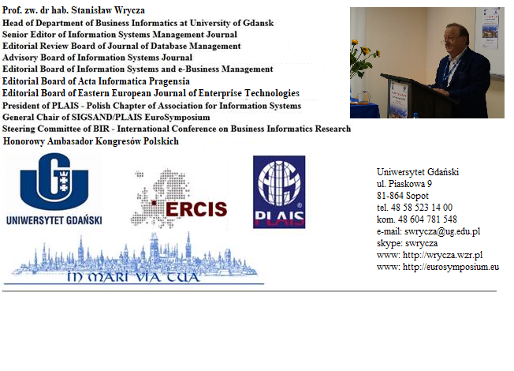

Plais Bulletin 100
Drodzy PLAIS’owicze,
Nie chce się wierzyć, ale to już setny, jubileuszowy numer Biuletynu PLAISu – (Polskiego Oddziału Association for information Systems)
1. Wyniki wyborów do PLAIS Executive Board na kadencję 2018-2020
Na kadencję 2018-2020 wybraliśmy następujący Executive Board, czyli Zarząd:
1. President - Prof. Stanisław Wrycza z Uniwersytetu Gdańskiego

2. President-Elect – Prof. Piotr Soja z Uniwersytetu Ekonomicznego w Krakowie:
http://janek.uek.krakow.pl/~sojap/
3. Treasurer – Prof. Jolanta Kowal z Uniwersytetu Wrocławskiego:
http://www.old.psychologia.uni.wroc.pl/?q=users/jkowal
4. Secretary – Dr Michał Kuciapski z Uniwersytetu Gdańskiego
http://www.e-mentor.edu.pl/artykul/index/numer/73/id/1341
Całemu Zarządowi PLAISu i sobie - życzę owocnej kadencji a zwłaszcza utrzymania wysokiej pozycji PLAISu w rankingu narodowych Chapters - jako AIS Outstanding Chapter , tak jak zalata 2014 i 2016. To istotne dla wizerunku polskiej informatyki tej dyscypliny (tak jest nazywana w wielu krajach) nauki, w światowym środowisku
2. PLAIS Annual General Meeting przed EuroSymposium
|
3. EuroSymposium’2018
W przekazywanych mi opiniach uczestników udało się – więcej na ten temat, wraz z Galerią zdjęć, w załączniku. Już dziś zapraszam na kolejne EuroSymposium, które odbędzie się pod koniec września 2019 roku.
Serdecznie pozdrawiam wszystkich PLAISowiczów
Stanisław Wrycza
PLAIS President